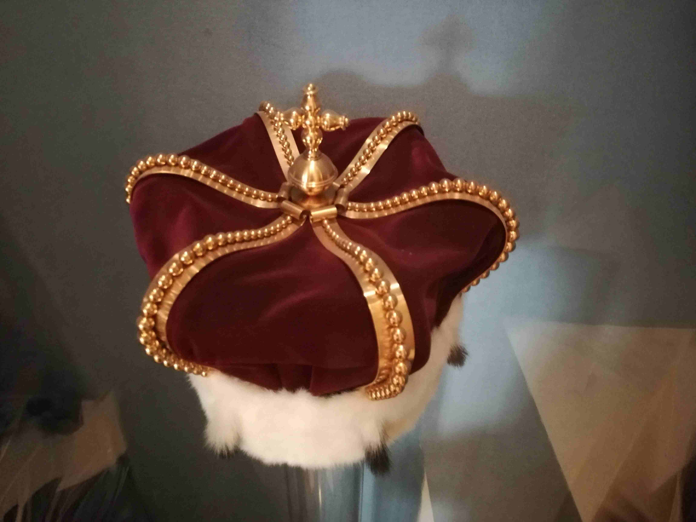

Für Schulklassen und Kinder
Auf den Spuren eines verschwundenen Schatzes
Familienabenteuer durch das alte Düsseldorf

Jan, Anna und der verschwundene Kurhut
Auf seinem Reiterstandbild trägt Kurfürst Johann Wilhelm II. von der Pfalz-Neuburg, besser bekannt als Jan Wellem, seinen Kurhut wie eine Krone auf dem Kopf. Gemeinsam begeben wir uns auf die Suche nach diesem legendären Kurhut. Der kostbare Kopfschmuck galt einst als Symbol von Macht und Reichtum, doch sein Verbleib gibt bis heute Rätsel auf.
Auf unserem Rundgang entdeckt ihr die wichtigsten Orte aus dem Leben von Jan Wellem und seiner beliebten Gemahlin Anna Maria Luisa de Medici. Spielerisch erfahren kleine und große Entdecker, wie die Menschen damals lebten, regierten und feierten. Geschichten, Rätsel und überraschende Details machen die Vergangenheit lebendig und verwandeln die Stadtführung in ein Abenteuer für die ganze Familie.
Geeignet für: Familien mit Kindern bis 12 Jahre
Interesse an dieser Tour?
Stellen Sie unverbindlich Ihre Anfrage für „Kinder suchen den verschwundenen Kurhut“.